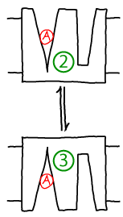
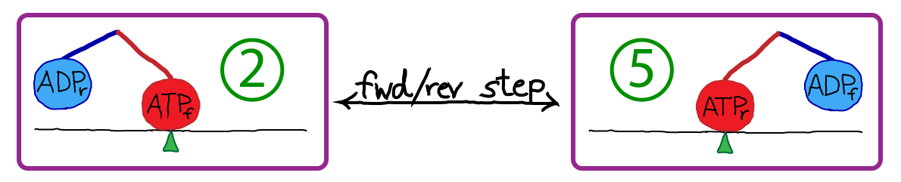
Other sections of this website employ kinetic descriptions of conformational transitions, but here we want to probe the more detailed statistical mechanics. What is the meaning of conformational free energy? What is the connection between microscopic forces at the atomic level and observed populations and rate constants?
We'll consider a generic conformational transition between two states A and B, characterized by rate constants $\kab$ and $\kba$. A and B could correspond to the numbered states shown above, for instance. If we have a large number of copies $N$ of our molecule (or system) of interest which are in equilibrium, then some subset of these $N_A$ and $N_B$ are in the two states of interest. Our discussion will apply even if there are other states besides A and B, so that $N = N_A + N_B + N_C + N_D + \cdots$.
Equilibrium, as always, implies there is a balance of flows among states. This can be stated in different ways:
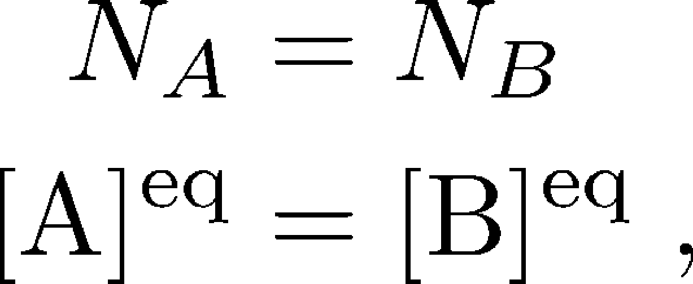 (1)
where here $N_X$ refers to the equilibrium number of systems in state $X$ and $\conceq{X} = N_X / V$ refers to the equilibrium concentration in a volume $V$.Statistical mechanics tell us how to derive "macroscopic" observable properties, such as the ratio of state populations $N_A/N_B$, from "microscopic" forces and energies. Our microscopic description will employ classical physics, although the treatment of quantum properties is largely similar. For a good discussion of quantum statistical mechanics and the connections to a classical description, see the book by Simon and McQuarrie.
In classical statistical mechanics, we can derive observable properties solely by knowing the the potential energy $U$ as a function of the positions of all the atoms:
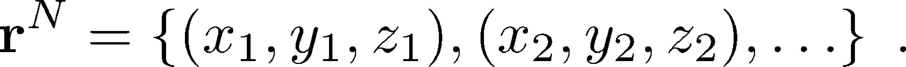 (2)
You should assume that all the atoms of all the molecules in a system are included - protein, water, ions, ligand, and any other buffer molecules.Knowing $U(\rn)$ is equivalent to knowing all the forces between atoms, because forces are obtained simply from derivatives of $U$. It is important that $U$ is a function of the atomic positions that includes all the physics and chemistry you would expect - electrostatics, van der Waals interactions, and even complex stereochemical effects; $U$ should not be confused with the thermodynamic internal energy, which is essentially the average energy (averaged over all configurations) for a given set of conditions. $U$ gives the energy for any specific configuration $\rn$.
The essential guiding equation of equilibrium statistical mechanics is that the probability of a configuration $\rn$ (sometimes called a microstate) is proportional to the Boltzmann factor of the potential energy:
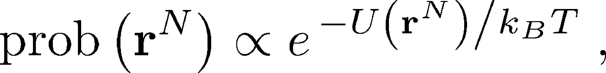 (3)
where $k_B$ is Boltzmann's constant and $T$ is the temperature in degrees Kelvin.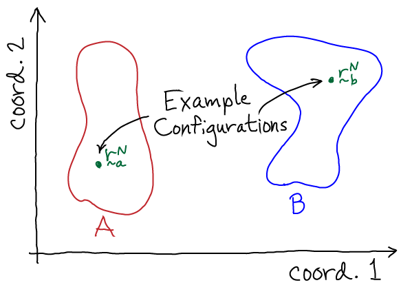
To extend this configuration-specific picture to conformational states, which are defined as large collections of configurations, we must sum up (integrate over) the probabilities of all the configurations consistent with a given state. Thus, we have
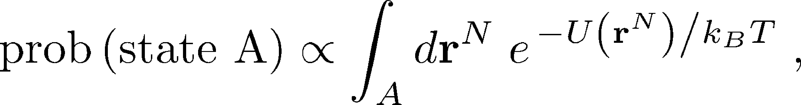 (4)
where the notation $\int_A$ indicates that we integrate over all configurations of state A. State A can be defined in an arbitrary way - for example, as those configurations in which a certain pair of atoms is closer or further than some threshold distance, or perhaps configurations with an RMSD value less then a threshold. To conform with physical expectations for a state, the selected configurations should interconvert among themselves much more rapidly than transitions to any other macroscopic state (B, C, ...).We use the (relative) state populations to define the conformational free energies based on Boltzmann factors of free energies instead of potential energies:
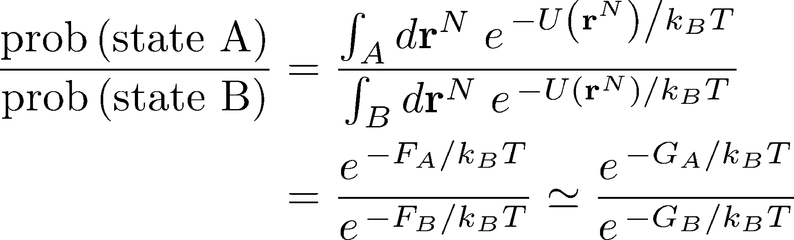 (5)
where $F_X$ is the Helmholtz free energy of state X and $G_X$ is the Gibbs free energy. The integrals used above strictly refer to the Helmholtz free energy, which is appropriate for constant volume, but the the constant-pressure Gibbs free energy will be very similar. See the textbook by Zuckerman for a discussion of this issue.The bottom line is that the conformational free energy yields an effective energy whose Boltzmann factor yields the state probability. The free energy is not simply the average energy within a state, as discussed in the Zuckerman textbook.
Because the probability of a state is equal to the fraction of systems in that state - that is, $\mathrm{prob} \left( \mbox{state X} \right) = N_X / N$ - we can now re-write the original equilibrium balance condition in terms of free energies:
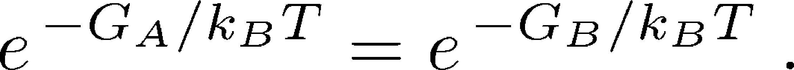 (6)
It is this free energy which is used implicitly in discussions of antiporter and the ATP synthase.The connection of the microscopic picture based individual configurations $\rn$ to observable kinetic quantities like rate constants can be considerably more complicated. Nevertheless, the basic ideas can be understood with a minimum of complex math.
The key object for studying a system's nonequilibrium behavior is the trajectory $\rn(t)$, the configuration as a function of time. It's simplest to think of this as a time-ordered list of configurations:
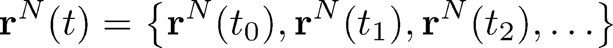 (7)
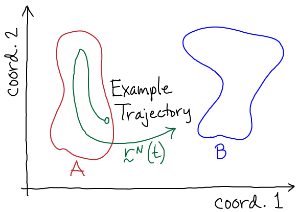
In nature, a trajectory is generated by the full quantum mechanical behavior of the universe, but it's a lot easier to imagine our system of interest contained in a finite volume $V$ including solvent, ligands, etc. Our system is in contact with its environment characterized by its temperature $T$, pressure $P$, pH, etc. Given all this, one can imagine writing down equations which would tell us how the system configuration changes from from time $t_j$ to $t_{j+1}$. For concreteness, it's simplest to imagine using Newton's laws (as employed in molecular dynamics simulation) - each atom's velocity changes according to the force and the position according to the velocity.
Now we can perform a valuable thought experiment. Imagine following the trajectory (the "movie") of our system for a very long period of time - so long that that every important system behavior occurs multiple times. From this trajectory, we can calculate any observable of interest. For example, we could calculate the rate $\kab$ for transitions from state A to B by averaging the 'first-passage' times required for the trajectory to reach B for the first time after each time it enters A - and then taking the reciprocal of this average. That is, as was explained by Hill,
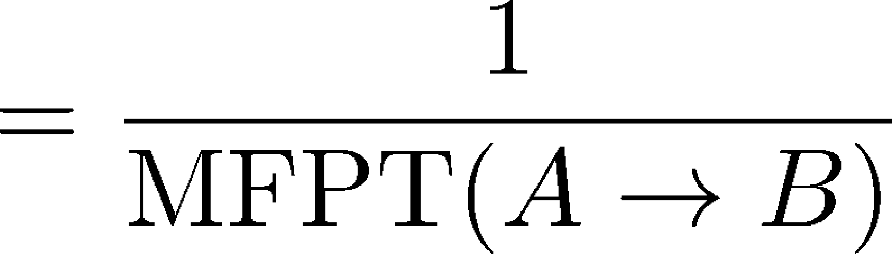 (8)
From the same long trajectory, we can also calculate equilibrium averages by considering all configurations $\rn$ occurring in the trajectory. For example, we can calculate the ratio of equilibrium populations of states A and B based on the time spent in each state
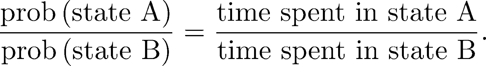 (9)
Importantly, we can calculate equilibrium quantities from the (dynamical) trajectory. We cannot, however, calculate non-equilibrium quantities like rates just by considering configuration integrals as in (5).
Should we also apply the concept of free energy minimization to conformational states? To see why we should not do so, let's begin by re-examining Eq. (4), which gives the exact statistical mechanical (relative) probability of state A. The absolute (or fractional) probability is necessarily less than one - see Exercises. So in terms of any discrete states that have been defined (A, B, ...), according to Eq. (5) the minimum free energy will correspond to the maximum probability. Depending on the system and the states that have been defined there is no reason why the maximum probability should approach one. Thus, there may be significant probability in other states.
In slightly different words, we expect each state to have some probability, so it would be wrong to ignore those besides the most probable. Of course, it's possible to define a state that, by construction/choice, has almost all the probability. However, defining conformational states is a tricky business, and something we won't delve into.
Because state definitions can be somewhat arbitrary, in conformational statistical mechanics we often turn to a more precise, if still imperfect, quantity call the conformational free energy. (This also can be called the "potential of mean force", PMF, but it only yields the true mean force if the PMF is defined in special ways.)
To understand basic conformational behavior, we will define the conformational free energy $G(q) \simeq F(q)$ for any coordinate $q$ as the energy whose Boltzmann factor is proportional the probability of observing the value $q$. For example, $q$ could be the angle between two helices or the distance between two atoms of a protein. In analogy to the way the relative probability for state A was defined as the sum (integral) over all Boltzmann factors within state A via Eq. (4), we can similarly calculate the relative probability for coordinate $q$. We can do this by defining $\rnhat$ (note the 'hat' over $\mathbf{r}$) as the set of all coordinates except $q$, which leads to the relations
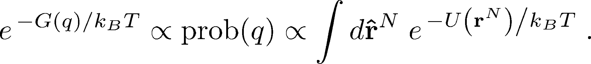 (10)
To understand this equation in a simple context, imagine we have a two-dimensional system with a potential energy $U(x,y)$. Then, to find the Boltzmann factor of $G(x)$, we integrate over $y$ which is $\rnhat$ in this simple case; that is, we sum up the probability for all configurations $(x,y)$ consistent with a given $x$ value. This process is called "projection" or "marginalization" and is discussed further in the Zuckerman textbook.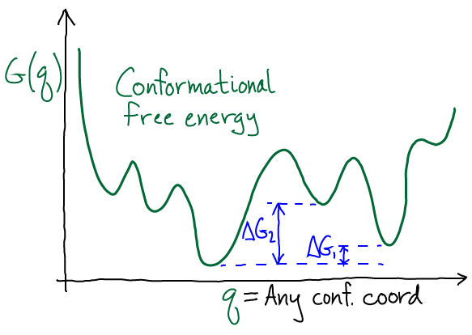
The sketch shows a schematic $G(q)$ with multiple minima, a phenomena which should be expected in complex systems such as biomolecules. The degree to which there is a single dominant state depends on the $\Delta G$ values between minima: if they are large compared with $k_B T$, then the global minimum region of $G$ indeed will capture most of the probability. However, unless there is evidence for this, you should expect a mulitiplicity of states will be important.
A few words of warning are required about the conformational free energy. As I have discussed at length in a blog post, the problem with $G(q)$ or a PMF is that coordinates tended to be selected based on intuition; and although the resulting landscape has a genuine basis in statistical mechanics, it may obscure important conformational (i.e., "mechanistic") behavior. The choice of $q$ can affect the number, apparent locations, and identities of the local minima, as well as affecting the values of the barrier heights connecting them. Hence mechanistic and kinetic inferences based on $G(q)$ alone must be subjected to more detailed testing.